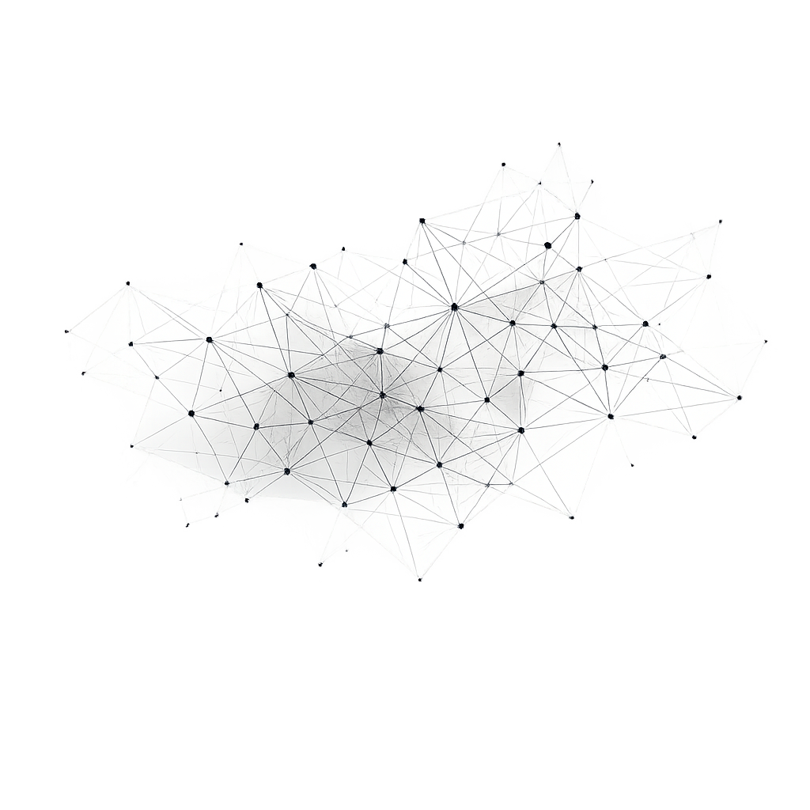

A
b
o
u
t
M
e
A few things about how I work...
I design and build intelligent digital products that combine modern web technologies with artificial intelligence. My work spans high-performance websites, custom web applications, AI-powered platforms, automation tools, and data-driven solutions designed to solve complex business challenges.
From concept to deployment, I focus on creating scalable, secure, and intuitive systems that deliver measurable value. Whether developing customer-facing applications, integrating large language models into existing workflows, or building bespoke software from the ground up, every solution is designed with performance, usability, and long-term maintainability in mind.
My interdisciplinary background in applied linguistics complements my technical expertise by bringing a deep understanding of language, context, and human communication to AI development. This enables me to create AI experiences that are not only technically sophisticated but also accurate, natural, and accessible across languages, cultures, and industries.
I believe the best technology is invisible—powerful enough to solve complex problems while remaining intuitive for the people who use it.
🌐 Languages & Culture
🇵🇱 🇬🇧 🇫🇷 🇪🇸
My expertise combines applied linguistics with artificial intelligence, focusing on how language, context, and cultural nuance influence the way intelligent systems understand and generate human communication. I leverage multilingual and cross-cultural expertise to evaluate, refine, and optimize AI interactions across diverse audiences.
Understanding language extends far beyond translation—it requires recognizing intent, ambiguity, semantics, and cultural context. This interdisciplinary foundation enables me to contribute to AI solutions that are more accurate, reliable, and human-centered, ensuring they communicate naturally and effectively across languages and markets.
🧊 Mathematics & Problem Solving
Maths & Physics
Mathematics has always been my go-to for clarity and precision. I stay connected with it by developing math-focused web apps and offering one-on-one tutoring sessions — because sometimes solving a great equation feels just as satisfying as writing clean code.

🌿 Sustainability & Future Projects
#CleanEnergy #ClimateTech #RenewableEnergy #CircularEconomy
I'm eager to collaborate with companies and initiatives that prioritize sustainability and clean energy. Supporting a future built on responsibility and innovation is something I deeply care about — and I'd love to contribute through meaningful digital work. Whether it’s building eco-conscious websites or developing energy-efficient applications, I aim to bring sustainable solutions to digital development.